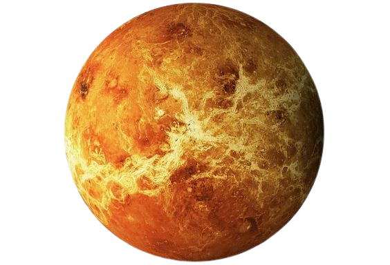
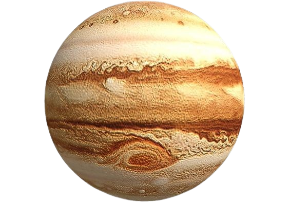

Galileu Galilei
Biografia
Descobertas
Influência
Galileu Galilei
Galileu Galilei, um dos mais proeminentes cientistas do Renascimento, nasceu em Pisa, Itália, em 15 de fevereiro de 1564. Sua contribuição para a ciência e a astronomia foi revolucionária. Galileu aprimorou o telescópio, realizando observações que confirmaram a teoria heliocêntrica de Copérnico, desafiando assim a visão geocêntrica dominante da época.
 
Venus e jupiter
item